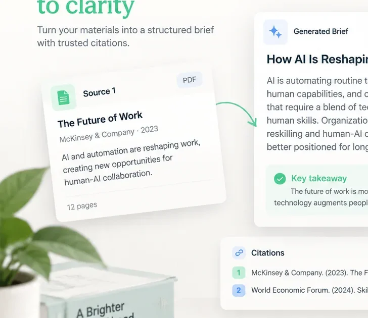
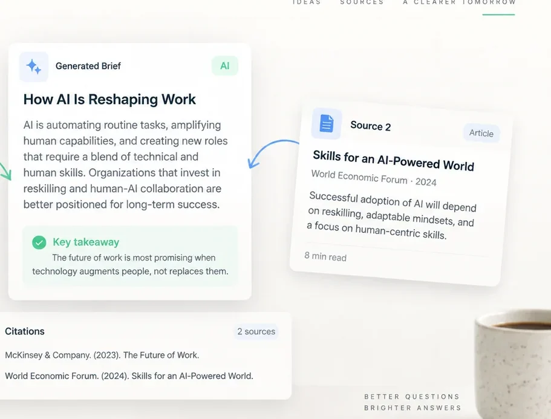

Instructions
Create a concise launch plan from the selected research. Keep the voice practical and support every claim with a source.
~186 tokens
Context Composer turns files, notes, transcripts, and references into one clean brief, ready for any language model.
Get the app ↓Available for desktop

~186 tokens

Use short sections and concrete examples.